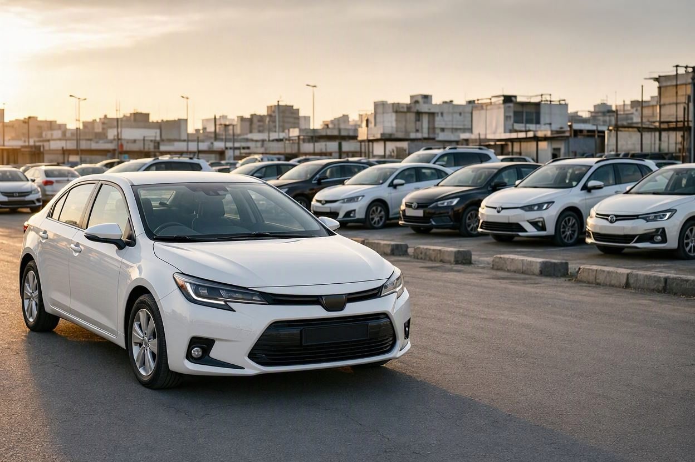
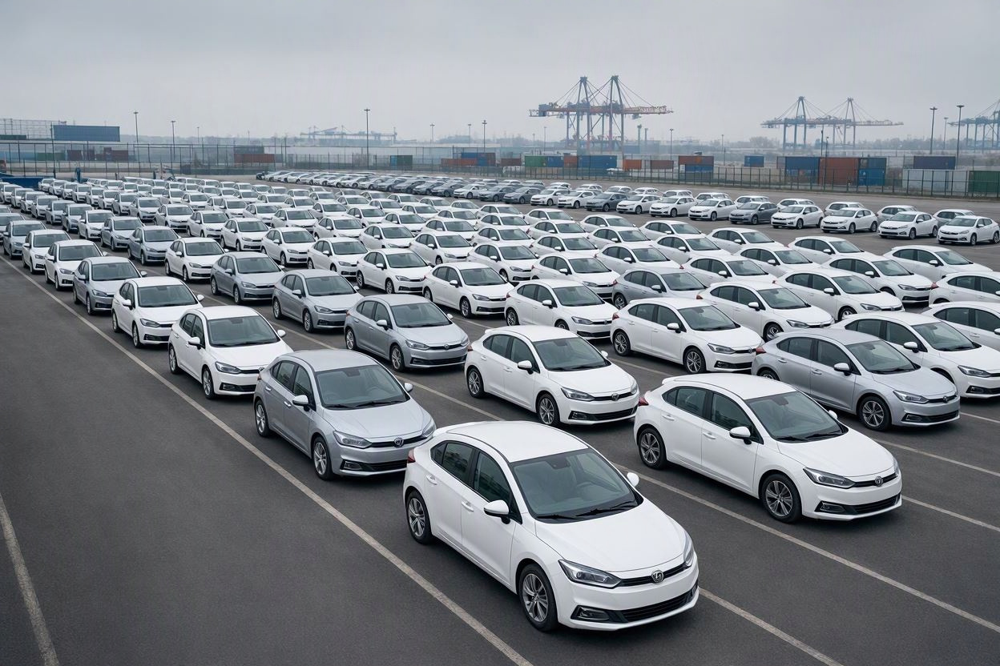
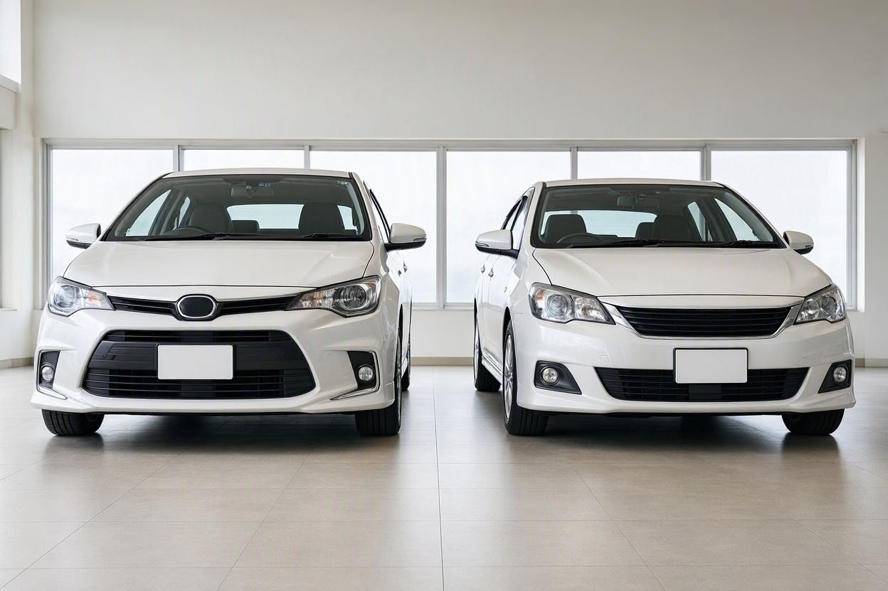
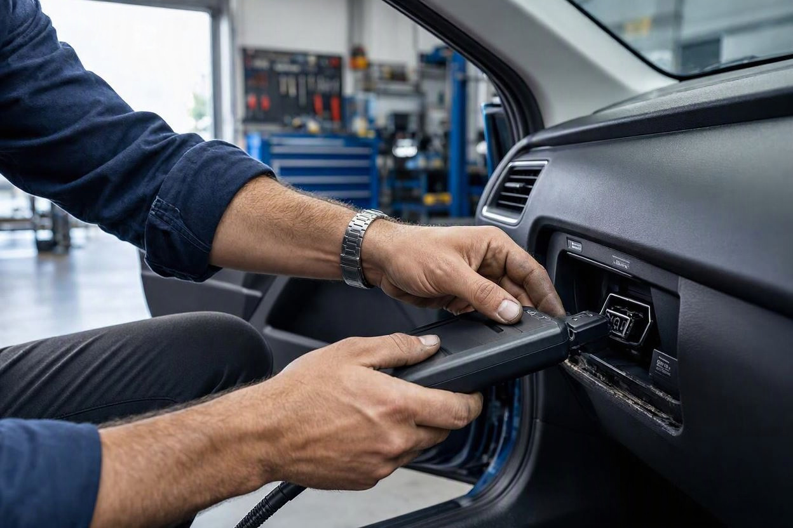
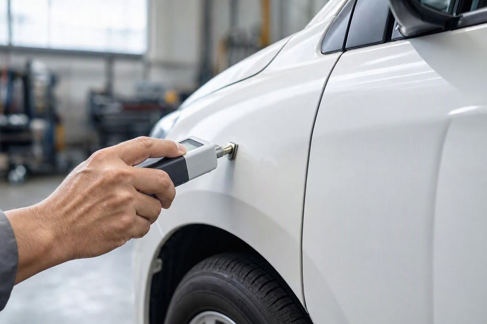

پرفروشترین ماشین خارجی در ایران کدام است؟
فرض کنید بودجهتان به یک خودروی وارداتی رسیده و در آگهیها مدام به یک نام برمیخورید: کرولا. سؤال طبیعی این است که چرا همه همین را میخرند و آیا انتخاب پرطرفدار، انتخاب درستی هم هست؟
برای پاسخ به سؤال پرفروشترین ماشین خارجی در ایران، اول باید روشن کنیم منظور از «خارجی» چیست و «پرفروش» با چه دادهای سنجیده میشود. آمار رسمی فروش خردهفروشی خودروهای وارداتی بهصورت منظم منتشر نمیشود؛ آنچه در دسترس است، آمار ترخیص از گمرک و گزارشهای وزارت صمت است. در این مطلب، ما در کارماچک همین دادهها را کنار هم گذاشتهایم و توضیح دادهایم که پرتیراژ بودن یک مدل برای خریدار خودروی دست دوم چه معنایی دارد.
بر اساس گزارشهای منتشرشده از آمار گمرک ایران در سالهای ۱۴۰۳ و ۱۴۰۴، تویوتا کرولا و نسخه چینی آن یعنی تویوتا لوین بیشترین سهم را در واردات خودروی سواری داشتهاند. چون آمار رسمی فروش نهایی منتشر نمیشود، این رتبه بر پایه تعداد واردات است. پرتیراژ بودن یعنی قطعه و تعمیرکار راحتتر پیدا میشود، اما سلامت هر نمونه دست دوم را جداگانه باید سنجید.
خلاصه در یک دقیقه
- در گزارشهای گمرک، کرولا و لوین پرتعدادترین خودروهای سواری وارداتی بودهاند.
- معیار این رتبهبندی تعداد واردات و ترخیص است، نه آمار رسمی فروش به مصرفکننده.
- طبق اعلام سخنگوی وزارت صمت در اسفند ۱۴۰۴، در ده ماه نخست سال ۱۴۰۴ حدود ۵۴ هزار خودرو ترخیص شد.
- پرطرفدار بودن، بازار دست دوم را فعالتر میکند ولی جای کارشناسی تکتک خودروها را نمیگیرد.
منظور از ماشین خارجی در این مقاله چیست؟
در این مقاله، ماشین خارجی یعنی خودرویی که بهصورت کامل ساخته شده و از کشور دیگری وارد ایران شده است. در بازار به این خودروها «وارداتی» یا «کامل وارداتی» میگویند.
این تفکیک مهم است، چون در خیابانهای ایران خودروهای زیادی با برند خارجی دیده میشوند که در داخل مونتاژ شدهاند. مدلهای مونتاژی آمار و مسیر فروش جداگانهای دارند و در رتبهبندی واردات گمرک حساب نمیشوند. اگر هدفتان مقایسه یک خودروی مونتاژی با یک مدل وارداتی است، اول همین تفاوت را در اسناد و شماره شاسی خودرو مشخص کنید.
آمار واردات درباره پرفروشترین ماشین خارجی چه میگوید؟
پاسخ کوتاه: در گزارشهایی که از آمار گمرک ایران منتشر شده، کرولا و لوین در صدر خودروهای سواری وارداتی قرار گرفتهاند. اما این عدد، آمار واردات است و آمار فروش نهایی به مشتری نیست.
طبق گزارش دیجیاتو از آمار گمرک (شهریور ۱۴۰۳)، در پنج ماه نخست سال ۱۴۰۳ حدود ۱۵ هزار و ۵۰۰ دستگاه خودروی سواری با ارزشی نزدیک به ۳۱۷ میلیون دلار ترخیص شد. در همین گزارش، شرکت معینخودرو با ۴ هزار و ۵۱۸ دستگاه بزرگترین واردکننده بود و کرولا و لوین پرتعدادترین مدلها معرفی شدند.
در سال ۱۴۰۴ حجم واردات بیشتر شد. سخنگوی وزارت صنعت، معدن و تجارت در اسفند ۱۴۰۴ اعلام کرد که در ده ماه نخست سال حدود ۵۴ هزار خودرو ترخیص شده و با احتساب خودروهای در راه و مانده در گمرک، واردات سال به حدود ۸۰ هزار دستگاه میرسد. او رقم سال ۱۴۰۳ را حدود ۶۰ هزار دستگاه عنوان کرد.

چرا کرولا و لوین اینقدر پرطرفدار شدهاند؟
محبوبیت این دو مدل یک دلیل واحد ندارد. چند عامل کنار هم قرار گرفتهاند که هم برای واردکننده و هم برای خریدار جذاب است.
- اعتبار برند تویوتا: خریدار ایرانی تویوتا را با دوام و کمدردسر بودن میشناسد و این ذهنیت در قیمت فروش مجدد هم اثر دارد.
- نسخه هیبریدی: هر دو مدل نسخه هیبریدی دارند که مصرف سوخت را در ترافیک شهری پایین نگه میدارد.
- تعدد واردکننده: وقتی چند شرکت یک مدل را وارد میکنند، عرضه بیشتر و دسترسی به خدمات پس از فروش آسانتر میشود.
- بازار دست دوم فعال: مدل پرتیراژ خریدار بیشتری دارد و فروش دوباره آن معمولاً سریعتر انجام میشود.
نکته مهم اینجاست که هیچکدام از این مزیتها درباره یک خودروی مشخص تضمینی نمیدهد. یک کرولای تصادفی یا یک باتری هیبریدی فرسوده، همانقدر هزینهساز است که هر خودروی دیگری.
کرولا و لوین چه تفاوتی با هم دارند؟
لوین نسخهای از کرولا است که شرکت مشترک تویوتا در چین تولید میکند. طراحی جلوبندی و برخی جزئیات ظاهری و تجهیزات با کرولا فرق دارد، اما پایه فنی دو خودرو نزدیک است.
تفاوت عملی برای خریدار ایرانی بیشتر در سه جاست: کشور سازنده، واردکننده و شرایط گارانتی. تیپ و تجهیزات هر محموله هم ممکن است متفاوت باشد؛ پس مشخصات را از روی مدارک همان خودرو و کاتالوگ رسمی واردکننده چک کنید، نه از روی آگهی.
| موضوع | کرولا | لوین | چه چیزی را چک کنید؟ |
|---|---|---|---|
| سازنده | تویوتا (بسته به محموله) | شرکت مشترک تویوتا در چین | کشور سازنده در سند و برگه گمرکی |
| واردکننده | چند شرکت مختلف | چند شرکت مختلف | نام واردکننده و اعتبار گارانتی |
| پیشرانه | بنزینی و هیبریدی | بنزینی و هیبریدی | نوع پیشرانه درجشده در کارت خودرو |
| تجهیزات | بسته به تیپ | بسته به تیپ | کاتالوگ رسمی همان تیپ |

پیش از معامله، خودرو را بررسی کنید
اگر درباره وضعیت فنی، بدنه یا مدارک یک خودروی وارداتی مطمئن نیستید، بررسی تخصصی میتواند ابهامهای معامله را کمتر کند.
شروع کارشناسی خودروپیش از خرید کرولا یا لوین دست دوم چه چیزهایی را بررسی کنیم؟
خرید پرفروشترین ماشین خارجی در ایران بهصورت دست دوم، همان قواعد خرید هر خودروی کارکرده را دارد و چند نکته اختصاصی هم به آن اضافه میشود. بخش عمومی را در چکلیست خرید خودرو دست دوم مرور کنید؛ اینجا روی نکتههای مخصوص خودروهای وارداتی هیبریدی تمرکز میکنیم.
- مرحله اول:مدارک ترخیص و سند را تطبیق دهید. شماره شاسی روی بدنه باید با سند، کارت و مدارک واردات یکی باشد.
- مرحله دوم:وضعیت گارانتی و نام واردکننده را بپرسید و از خود واردکننده استعلام بگیرید که گارانتی به مالک بعدی منتقل میشود یا نه.
- مرحله سوم:در نسخه هیبریدی، سلامت باتری و سیستم هیبریدی را با دستگاه دیاگ بررسی کنید. پیغام خطای ذخیرهشده حتی اگر چراغی روشن نباشد، اطلاعات مهمی دارد.
- مرحله چهارم:رنگ و بدنه را با ضخامتسنج بسنجید. خودروی وارداتی ممکن است پیش از رسیدن به دست مصرفکننده هم آسیب دیده باشد.
- مرحله پنجم:در تست رانندگی به جابهجایی نرم بین حالت برقی و بنزینی، صدای غیرعادی گیربکس و عملکرد ترمزها توجه کنید.

خیلی از خریدارها بخش مدارک را نادیده میگیرند و فقط ظاهر را میبینند. در خودروی وارداتی، ایراد مدارک میتواند هنگام انتقال سند یا فروش بعدی دردسرساز شود. یک کارشناسی فنی و بدنه خودرو پیش از پرداخت، هم وضعیت فنی و هم تطابق مشخصات را روشن میکند. کارماچک بهعنوان ارائهدهنده خدمات کارشناسی خودرو در ایران، فقط ایراد خودرو را شناسایی نمیکند؛ اثر آن روی هزینه تعمیر و ارزش واقعی معامله را هم مشخص میکند.
چه زمانی باید حتماً سراغ کارشناس برویم؟
اگر در دیاگ خطای مربوط به سیستم هیبریدی ثبت شده، اگر ضخامت رنگ در چند قطعه ناهمگون است، یا اگر مدارک گمرکی و سند با هم نمیخوانند، تصمیم را به بررسی تخصصی موکول کنید. هیچکدام از این نشانهها بهتنهایی حکم قطعی درباره خودرو نمیدهد، اما هر کدام دلیل کافی برای بررسی دقیقتر است.

جمعبندی
اگر منظورتان از پرفروشترین ماشین خارجی در ایران، پرتعدادترین خودروی سواری کامل وارداتی باشد، دادههای منتشرشده گمرک کرولا و لوین را در صدر نشان میدهند. این جایگاه بر پایه آمار واردات است، نه آمار رسمی فروش. برای خریدار دست دوم، این محبوبیت یعنی بازار فعالتر و دسترسی سادهتر به قطعه و تعمیرکار، اما هر خودرو سرگذشت خودش را دارد و باید جداگانه سنجیده شود.
خرید خودروی وارداتی با اطمینان بیشتر
پیش از نهایی کردن معامله کرولا، لوین یا هر خودروی وارداتی دیگر، وضعیت فنی، بدنه و مدارک را بسنجید.
رزرو کارشناسیسؤالات متداول
پرفروشترین ماشین خارجی در ایران کدام است؟
بر اساس گزارشهای منتشرشده از آمار گمرک ایران در سالهای ۱۴۰۳ و ۱۴۰۴، تویوتا کرولا و نسخه چینی آن، لوین، بیشترین تعداد را در میان خودروهای سواری کامل وارداتی داشتهاند. این رتبه بر پایه آمار واردات و ترخیص است، چون آمار رسمی فروش نهایی خودروهای وارداتی بهصورت منظم منتشر نمیشود.
در سال ۱۴۰۴ چند خودرو وارد ایران شد؟
سخنگوی وزارت صنعت، معدن و تجارت در اسفند ۱۴۰۴ اعلام کرد که در ده ماه نخست سال حدود ۵۴ هزار خودرو ترخیص شده است. به گفته او، با احتساب خودروهای در راه و مانده در گمرک، واردات کل سال به حدود ۸۰ هزار دستگاه میرسد. رقم نهایی را باید از گزارش رسمی پایان سال پیگیری کرد.
لوین همان کرولا است؟
لوین نسخهای از کرولا است که شرکت مشترک تویوتا در چین تولید میکند. پایه فنی دو خودرو نزدیک است، اما طراحی جلوبندی، برخی تجهیزات و کشور سازنده متفاوت است. برای مقایسه دقیق، مشخصات همان تیپ را از کاتالوگ رسمی واردکننده بخوانید و به توضیح آگهی بسنده نکنید.
آیا خودروی وارداتی پرفروش، انتخاب کمریسکتری است؟
نه لزوماً. پرتیراژ بودن یک مدل، پیدا کردن قطعه و تعمیرکار و فروش دوباره را آسانتر میکند، اما سلامت یک خودروی مشخص را تضمین نمیکند. سابقه تصادف، وضعیت باتری هیبریدی و صحت مدارک برای هر خودرو جداگانه است و باید پیش از خرید بررسی شود.
در خرید کرولا هیبریدی دست دوم مهمترین بخش کدام است؟
سیستم هیبریدی و باتری آن مهمترین بخش اختصاصی این خودرو است. بررسی با دستگاه دیاگ، خطاهای ذخیرهشده و وضعیت سیستم را نشان میدهد. در کنار آن، بدنه، رنگ و تطابق شماره شاسی با مدارک ترخیص هم باید بررسی شود، چون ایراد هر کدام روی ارزش معامله اثر مستقیم دارد.